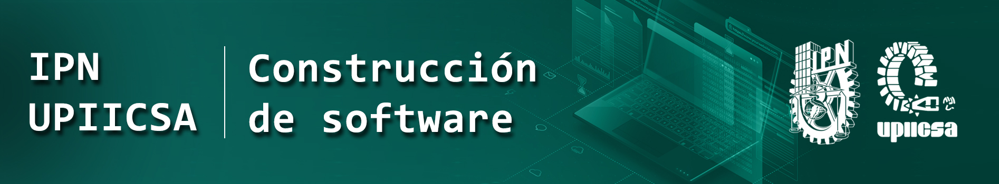
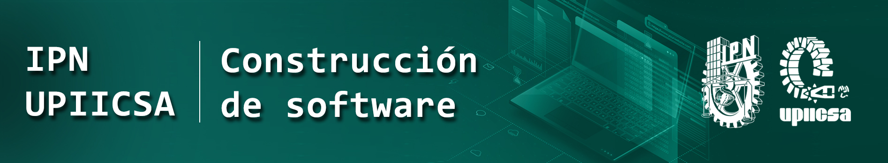

Referencias
- Floyd Thomas L. (2016). Fundamentos de Sistemas Digitales. (11va ed.). Prentice Hall.
- Morris Mano M. (2013). Fundamentos de Lógica Digital y diseño de Computadoras. (5ta ed.). Prentice Hall.
- Tocci Ronald J. (2013). Sistemas Digitales, Principios y Aplicaciones. (11va ed.). Prentice Hall.
- Wakerly John. (2016). Diseño Digital, Principios y Prácticas. (3ra ed.). Prentice Hall.
Páginas WEB


 
